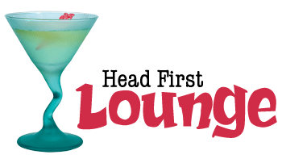

Welcome to the Head First Lounge
Специальные предложения напитков

Lemon Breeze
Максимально полезный напиток. Содержит экстракты трав, минералы и витамины, а кусочек лимона в форме завитка придает напитку чудесный мягкий цитрусовый аромат. «Лимонный бриз» зарядит вас энергией на весь день.

Chai Chiller
Это не традиционный чай. В нем смешаны матэ и чайные специи, а также добавлен шоколадный сироп высшего качества, что придает напитку удивительный вкус ледяного кофе.

Black Brain Brew
Проблемы с памятью? Отведайте наш напиток «Подзарядка для мозга», сделанный из черного чая и небольшого количества эспрессо. Ваш мозг будет вам благодарен за подзарядку.
Заходите к нам каждый вечер и пробуйте эти и другие замечательные
напитки.
Head First Lounge, без сомнения, самый большой законодатель моды в Вебвилле. Остановитесь, чтобы попробовать эклектичное предложение эликсиров, чаев и кофе, или, оставайтесь немного дольше и нслаждайтесь кулинарным меню, которое сочетает гармонию вкуса, текстуры и цвета с лучшими в свежем и здоровые ингредиенты.
Во время вашего пребывания в лаундже вы насладитесь гладкой смесью эмбиентных и мистических звуков, заполнив зал и добавив дополнительное измерение в ваш столовой. Декор окружает вас расслабляющими чувствами достопримечательностей прошлых эпох. И, не забывайте, в лаундже предлагается бесплатный беспроводной доступ в Интернет, поэтому принесите свой ноутбук.
Наша гарантия: мы обязуемся оставлять у вас, наших гостей, только самые лучшие впечатления после каждого посещения гостевой. Неважно, зашли вы к нам просто проверить свою электронную почту за чашечкой чая или заказали грандиозный обед, вы увидите, что наш обслуживающий персонал обращает внимание на каждую мелочь. Если вы чем-то недовольны, отведайте наш чудо-напиток из Bliss Bliss.
Но это не все; в ночное время, присоединяйтесь к нам в задней комнате, как наш резидент DJ играет электронную музыку выбор транса drum&bass бьет через наш просторный тики-тематический танцпол. Или просто пообщаться в одном из наших удобных белых виниловых кабин в танцевальном баре. Вы можете достать эликсиры из основного лаунджа прямо на танцпол. Если бы у вас было достаточно ритма, просто отправляйтесь обратно в гостиную, чтобы расслабиться. И независимо от того, где вы окажетесь в лаундже, вы всегда будете связаны с нашим беспроводным доступом в Интернет.
Теперь вы наверняка хотите узнать как нас найти? Мы расположены в сомом в центре Webville. Если вам нужна помощь, чтобы найти нас, используйте наши
указатели.
Come join us!
Какая музыка играет в the Lounge
We're frequently asked about the music we play at the lounge, and no wonder,
it's great stuff. Just for you, we keep a list here on the site, updated weekly.
Enjoy.
- Buddha Bar, Claude Challe
- When It Falls, Zero 7
- Earth 7, L.T.J. Bukem
- Le Roi Est Mort, Vive Le Roi!, Enigma
- Music for Airports, Brian Eno